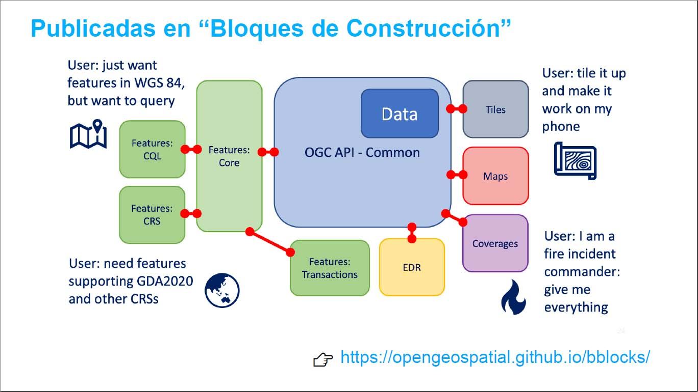

OGC API
La familia de estándares API de OGC se está desarrollando para facilitar que cualquier persona proporcione datos geoespaciales a la web. Estos estándares se basan en el legado de los estándares de servicios web de OGC (WMS, WFS, WCS, WPS, etc.), pero definen API centradas en recursos que aprovechan las prácticas modernas de desarrollo web.
Estos estándares se están construyendo como "bloques de construcción" que se pueden usar para ensamblar nuevas API para el acceso web a contenido geoespacial.

OGC API - Features
OGC API - Features es un estándar de varias partes que ofrece la capacidad de crear, modificar y consultar datos espaciales en la Web y especifica requisitos y recomendaciones para las API que desean seguir una forma estándar de compartir datos vectoriales. Mientras estaba en forma de borrador y antes de febrero de 2019 se denominó WFS3.0.
La especificación es un documento de varias partes. La parte principal de la especificación describe las capacidades obligatorias que todo servicio de implementación debe admitir y está restringida al acceso de lectura a los datos espaciales.
Las capacidades adicionales que abordan necesidades específicas se especificarán en partes adicionales. Las capacidades futuras previstas incluyen, por ejemplo, soporte para crear y modificar datos, modelos de datos más complejos, consultas más completas y sistemas de referencia de coordenadas adicionales.
Esta nueva generación de estándares API están basados en OpenAPI, un estándar general TIC que permite que el mundo de los datos geoespaciales no se gestione como un caso aparte y pueda beneficiarse de las mejoras, posibilidades, recursos y ventajas que ofrece la evolución de las TIC.
OGC API - Features - Part 1: Core
Esta primera parte especifica las capacidades esenciales (core) que en servicio para API de este estilo debe tener. Está restringido al Sistema de Referencia de Coordenadas (SRC) EPSG:4326 (WGS84 con orden de ejes longitud/latitud) y proporcionan acceso de solo lectura a datos espaciales. La Organización Internacional de Normalización (ISO) ha publicado la norma «ISO 19168-1:2020 Geographic information — Geospatial API for features — Part 1: Core», que es la versión ISO de «OGC API Features» - Parte 1: Core.
La parte 1, Core, especifica las operaciones de búsqueda y descubrimiento que se implementan mediante el método HTTP GET. Por defecto, cada API que implemente este estándar proporcionará acceso a un único conjunto de datos. En lugar de compartir los datos como un conjunto de datos completo, los estándares de características de API de OGC ofrecen acceso directo y detallado a los datos a nivel de característica (objeto).
El estándar WFS es más apropiado cuando se trabaja con aplicaciones cliente que solo admiten los servicios web clásicos de OGC. WFS adopta el GML como formato de datos predeterminado. Por el contrario, OGC API - Features incluye recomendaciones para admitir HTML y GeoJSON como codificaciones y también pueden admitir opcionalmente GML.
| Recurso | Path | Propósito | ||
|---|---|---|---|---|
| Página principal | / | Este es el recurso de nivel superior, que sirve como punto de entrada. | ||
| Declaración de conformidad | /conformance | Este recurso presenta información sobre la funcionalidad que implementa el servidor. | ||
| Definición de API | /api | Este recurso proporciona metadatos sobre la propia API. Tenga en cuenta que el uso de / api en el servidor es opcional y la definición de API puede estar alojada en un servidor completamente separado | ||
| Colecciones de elementos | /collections | Este recurso enumera las colecciones de elementos que se ofrecen a través de la API. | ||
| Colección de elementos | /collections/{collectionId} | Este recurso describe la colección identificada en la ruta. | ||
| Elementos | /collections/{collectionId}/items | Este recurso presenta los elementos que están contenidos en la colección. | ||
| Elemento | /collections/{collectionId}/items/{featureId} | Este recurso presenta el elemento que se identifica en la ruta |
Las llamadas al recurso de elementos (/collections/{collectionId}/items) pueden recibir parámetros adicionales para filtrar los elementos. Estos parámetros son:
- limit: se puede usar para controlar el tamaño de la página especificando el número máximo de elementos que se deben devolver en la respuesta (por defecto es 10). Cada página puede incluir información sobre el número de elementos seleccionados y devueltos ("numberMatched" y "numberReturned"), así como enlaces para admitir la paginación (relación de enlace "next"). Un ejemplo https://demo.ldproxy.net/daraa/collections/AeronauticCrv/items?f=json&limit=2
- offset: Sirve para navegar por la paginación de los resultados. https://demo.ldproxy.net/daraa/collections/AeronauticCrv/items?f=json&limit=2&offset=2
- bbox: selecciona solo el subconjunto de los elementos en la colección que están dentro de la caja de coordenadas especificada por el parámetro bbox. Un ejemplo https://demo.ldproxy.net/daraa/collections/VegetationSrf/items?f=json&bbox=36.0832432,32.599852,36.1168237,32.6283697
- datetime: selecciona solo el subconjunto de los elementos en la colección que están dentro dentro del intervalo de tiempo especificado por el parámetro datetime. Un ejemplo https://demo.ldproxy.net/daraa/collections/RecreationPnt/items?datetime=2011-12-26T20:55:26Z
También se puede filtrar por valores de las propiedades de los elementos. Un ejemplo: https://demo.ldproxy.net/daraa/collections/CulturePnt/items?F_CODE=A%2A
Ejemplo de servicio. https://demo.ldproxy.net/daraa
En las otras partes del estándar se definirán funcionalidades adicionales, como poder trabajar en otros SRC, crear y modificar objetos geográficos, consultas complejas, acceder a varios conjuntos de datos, recuperar jerarquías, etc.
Se puede ver la especificación en http://docs.ogc.org/is/17-069r3/17-069r3.html
OGC API - Features - Part 2: Coordinate Reference Systems by Reference
La Parte 2 amplía las capacidades especificadas en la Parte 1 con la capacidad de usar sistemas de referencia de coordenadas (CRS) distintos de WGS 84.
El estándar especifica:
- Cómo, para cada colección de objetos geográficos, un servidor muestra la lista de los identificadores de los CRS compatibles.
- Cómo se puede acceder a las coordenadas de los objetos geográficos.
- Cómo se puede acceder a los objetos geográficos mediante un rectángulo envolvente especificado (BBOX).
- Cómo un servidor puede declarar el CRS utilizado y, opcionalmente, el orden de los ejes.
Recuperar geometrías en un CRS específico
En las solicitudes para obtener un o más elementos, agregue el parámetro crs con uno de los CRS admitidos. Por ejemplo, use lo siguiente para recuperar los edificios en ETRS89 UTM Zona 32 Norte (un CRS proyectado):
https://demo.ldproxy.net/daraa/collections/SettlementSrf/items?f=json&crs=http%3A%2F%2Fwww.opengis.net%2Fdef%2Fcrs%2FEPSG%2F0%2F3857
Note
Como de costumbre, no olvide codificar en porcentaje el valor del parámetro.
Utilice una caja de coordenadas con otro CRS
De forma predeterminada, el parámetro bbox especificado en la Parte 1 espera una caja de coordenadas en el CRS predeterminado, a menos que se especifique otro CRS en el parámetro bbox-crs. Por ejemplo lo siguiente solicita los edificios en Bonn, Alemania, utilizando una caja de coordenadas en ETRS89 UTM Zona 32 Norte:
collections/buildings/items?bbox=280375,5577680,531792,5820212&bbox-crs=http%3A%2F%2Fwww.opengis.net%2Fdef%2Fcrs%2FEPSG%2F0%2F25832
Se puede ver la especificación en https://docs.ogc.org/is/18-058/18-058.html
OGC API - Features - Part 3: Filtering and the Common Query Language (CQL)
Warning
Esta es una versión BORRADOR de la tercera parte de la API de OGC. Este borrador no está completo y hay temas abiertos que aún están en discusión.
Una operación fundamental realizada en una colección de elementos es la de filtrar para obtener un subconjunto de los datos que contiene y que satisfacen algunos criterios de filtrado.
La Parte 3 define:
- Los parámetros de consulta (filter, filter-lang, filter-crs) para especificar criterios de filtrado en una solicitud a una API.
- Una gramática de filtro llamada Common Query Language (CQL) para especificar criterios de filtrado mejorados más allá de lo que admite el Core.
- Dos codificaciones para CQL: una codificación de texto y otra JSON.
CQL y su codificación de texto no son nuevos, pero esta es la primera vez que CQL se especifica correctamente. CQL se creó como una codificación de texto basada en las capacidades definidas en el estándar OGC Filter Encoding para su uso en el estándar OGC Catalog Service (CSW). Uno de los objetivos del diseño era mantener CQL lo más compatible posible con las implementaciones existentes. Por ejemplo, la clasificación de operadores en operadores lógicos, de comparación, espaciales y temporales, así como sus nombres y sintaxis, no se modifican con respecto a las definiciones originales en OGC Filter Encoding.
Ejemplo:
Primero vemos los atributos que son consultables https://demo.ldproxy.net/zoomstack/collections/roads_national/queryables
Ahora filtramos para obtener solo las carreteras de nivel 1. https://demo.ldproxy.net/zoomstack/collections/roads_national/items?f=json&filter=level=1
Se puede ver el borrador de la especificación en http://docs.ogc.org/DRAFTS/19-079r1.html
OGC API - Features - Part 4: Simple Transactions
Warning
Esta es una versión BORRADOR de la cuarta parte de la API de OGC. Este borrador no está completo y hay temas abiertos que aún están en discusión.
Define el comportamiento de una API que permite agregar, reemplazar, modificar y/o eliminar elementos para una colección.
La Parte 4 define:
- Cómo agregar una nueva instancia de recurso a una colección (es decir, crear).
- Cómo modificar un recurso existente de una colección; esto incluye reemplazar por completo el recurso existente (es decir, reemplazar) o simplemente modificar una o más propiedades de un recurso (es decir, actualizar).
- Cómo eliminar un recurso existente de una colección (es decir, eliminar).
La siguiente tabla cruza cada uno de las URL de recursos discutidos en este estándar con los métodos HTTP POST, PUT, PATCH y DELETE. Cada celda que se cruza en la tabla contiene el nombre de la operación para esa combinación de URL de recurso y método HTTP, o contiene la frase "n/a" que se usa para indicar que esta especificación no especifica ningún comportamiento para esa combinación de URL recurso y método HTTP.
| URL de recurso | Método HTTP | |||
|---|---|---|---|---|
| POST | PUT | PATCH | DELETE | |
| /collections/{collectionId}/items | crear | n/a | n/a | n/a |
| /collections/{collectionId}/items/{resourceId} | n/a | remplazar | actualizar | eliminar |
Se puede ver el borrador de la especificación en http://docs.ogc.org/DRAFTS/20-002.html
Referencias
https://ogcapi.ogc.org/ https://ogcapi.ogc.org/features/ https://opengeospatial.github.io/bblocks/